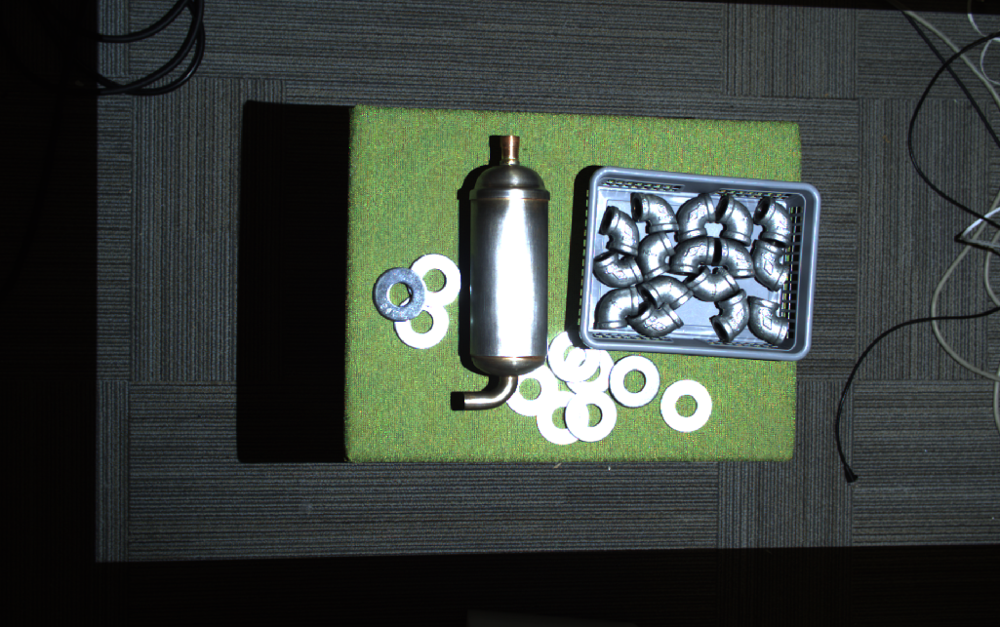
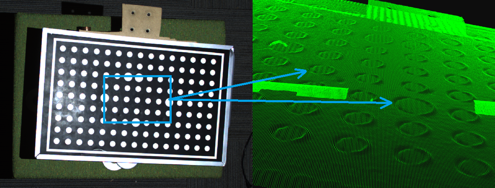
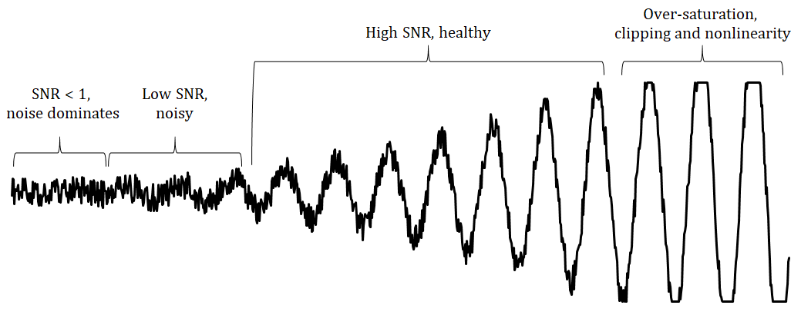
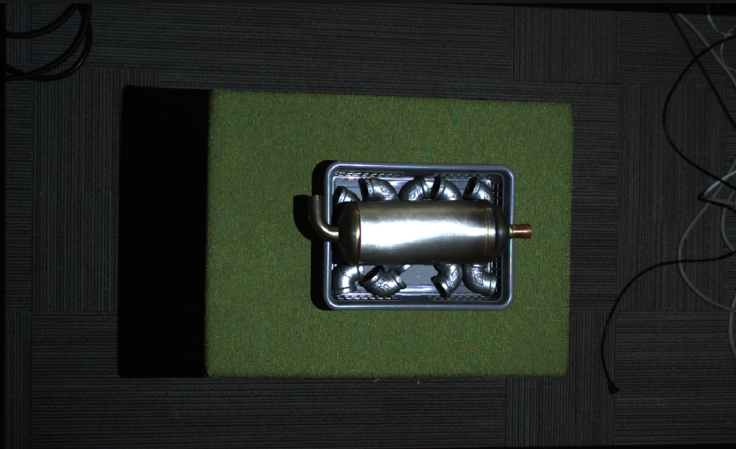
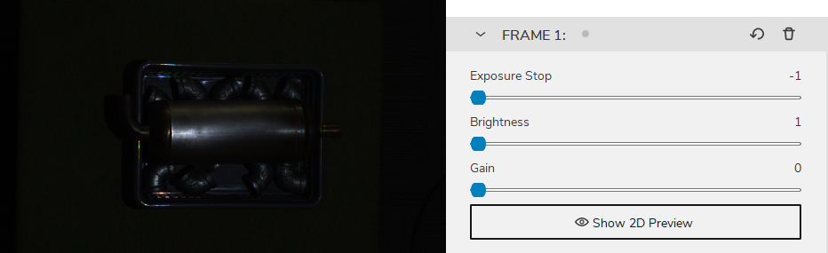
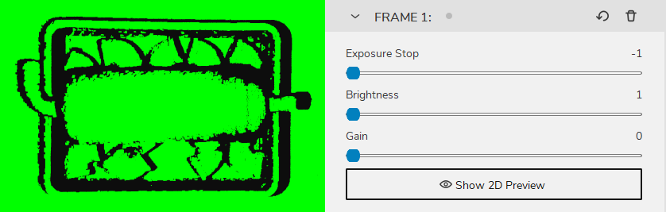
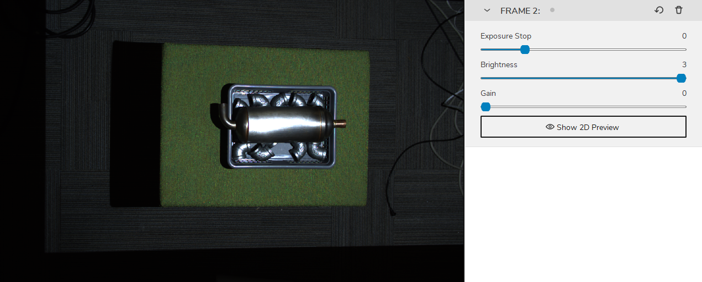
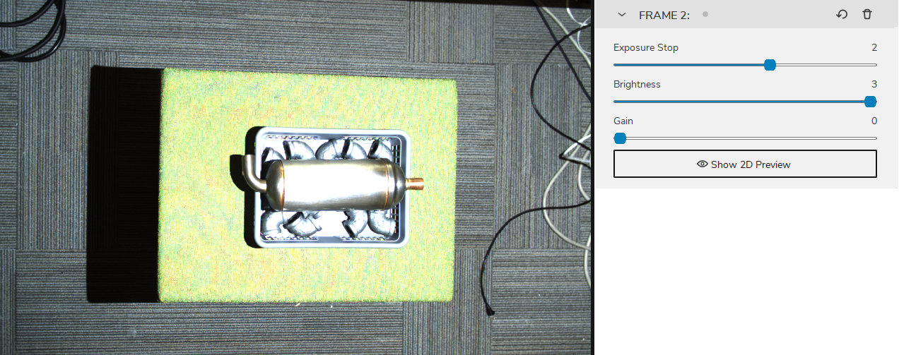
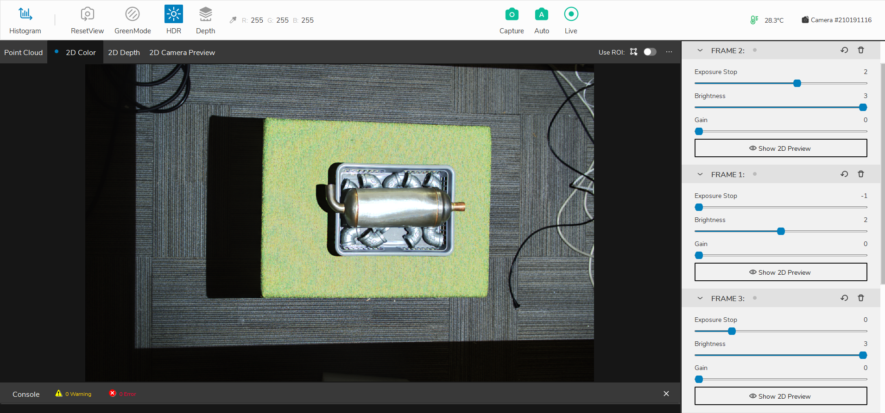
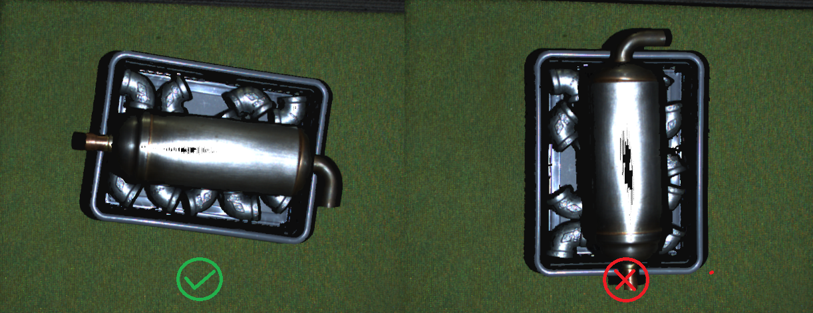

如何处理高光和闪亮物体
简介
这篇文章将讨论处理高光的具体挑战，这些高光可能发生在捕捉非常有光泽的物体的点云时，以及如何处理它。
在一个闪亮的物体面前，该物体的某些区域有可能会导致从DaoAI相机的投影仪直接反射到 DaoAI相机的投影仪直接反射到成像传感器上。如果这个物体是极度镜面化的，那么反射的光可能比图像中的其他光源强数千倍。 这就有可能导致像素变得过饱和。在下面的图片中可以看到这种区域的例子。
过度饱和的像素往往会将光线 “渗入 “其周围的像素。这种镜头模糊的结果是 对比度失真假象。这种效果在从黑到白的过渡和闪亮的圆柱体上很明显；请看下面的图片。
检查投影仪是否导致高亮
一些简单的方法可以用来判断高光是否是由DaoAI投影仪引起的，如上图中的例子。
研究二维图像，考虑高光出现的表面中的不同角度。这个方法需要一些练习。
通过拍摄额外的图像进行差分测量。试着将投影仪的亮度设置为0，使投影仪的光线降到最低，或者用手等遮住投影仪的镜头，然后拍摄第二张图像。如果高光在第二张图像中消失，你可以断定光源来自投影机。
最大限度地扩大三维传感器的动态范围，以捕捉高光部分
要获得好的闪亮物体的点云，需要你能同时捕捉到高光和低光。 DaoAI的3D相机有很宽的动态范围，因此可以同时拍摄黑暗和明亮物体的图像。
非常具有挑战性的场景（如下面的场景）通常需要3个HDR采集帧或更多。具有挑战性的场景通常应该有：
1-2个采集帧来覆盖最强的高光（非常低的曝光）。
1-2个采集帧来覆盖大部分场景（中等曝光度）。
1-2个采集框覆盖最暗的区域（非常高的曝光）。
应采用以下两个原则：
保持非常低的曝光度。
可能有必要降低投影仪的亮度，以保持投影图案的振幅在成像传感器的动态范围内。
原则上，我们通过限制投影机的亮度所要达到的目的是把信号从过饱和区域拉回来、 到健康区域。这在下图中得到了说明。
现在，我们将着重于捕捉高光部分。我们假设我们已经通过上述方法确定了我们场景中的极端高光。使用上面描述的方法。
让我们假设下面的场景。
我们可以清楚地看到场景中强烈的高光。
高光帧
首先，我们开始调整1-2个采集帧的设置，以最好地捕捉物体的高光区域。 在这种情况下，我们要尽量减少投影仪对物体的照射量。
我们从最低亮度设置的单个采集帧开始。
然后逐渐增加亮度，直到物体的高光区域得到最好的捕捉，并且没有引入缺失的点云和对比度失真假象。
这将是我们的高光帧。记下这个帧的设置并暂时删除它，我们开始调试我们的主要帧。
主要帧
接下来我们用1-2个采集帧来最好地捕捉物体的主要区域。使除了高光区域外的物体的每一个细节都能得到最佳捕捉。
而这将是我们的主要帧。记下这个框架的设置并暂时删除它，我们开始寻找我们的背景帧。
背景帧
然后，我们可以添加一个采集帧，以涵盖场景的其余部分和背景的采集。
最后，我们把高光帧和主要帧加回去，并启用HDR模式。
而点云则如下所示

处理对比度失真问题
处理对比度失真主要有两种方法。我们可以通过最大限度地提高相机的动态范围来减少这种影响 并将相机放置在规划区域。然后，我们可以使用对比度失真滤镜来纠正/删除其余受影响的点。
旋转和对齐场景中的物体
首先要记住的是，这是发生在三维传感器X轴的效果。 如果你的应用程序允许在相机的X轴上旋转有问题的区域，那么对比度失真效果可以大大缓解 如果你的应用程序允许将相机Y轴上的问题区域旋转到X轴上，就可以大大减轻对比度失真效果。例如，通过旋转一个有光泽的 圆柱体旋转90°，圆柱体上的曝光过度区域就会跟随相机的基线，如下图所示。
将背景的反射率与特定物体的反射率相匹配
一个好的经验法则是，尽量使用与你要成像的物体相似的亮度或颜色作为场景背景：
对于一个明亮的物体，使用一个明亮的背景（最好是白色兰伯氏）。
对于一个黑暗的物体，使用一个黑暗的背景（例如，大多数传送带使用的黑色橡胶）。
对于大多数有色的、无光泽的物体，使用类似反射率的背景（例如，对于香蕉，使用灰色或黄色背景）。
对于有光泽的金属物体，特别是圆柱形、圆锥形和球形物体，使用深色的吸收性背景，如黑色橡胶。这是因为目标光通常会从物体的可见边缘附近反射出去，使它们看起来非常暗（见下图）。同时，来自周围区域的光可能会反射到圆柱体边缘。
使用对比度失真滤波器
该滤波器可以纠正和/或消除由对比度失真引起的这些表面升高的伪影。 在高对比度区域的失焦和模糊。这将使物体的几何形状更加逼真、 特别是在平面和圆柱体上可以观察到。
如果你想了解更多关于这个滤镜和调整它的参数，请查看 对比度失真滤镜 。